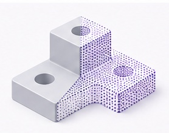
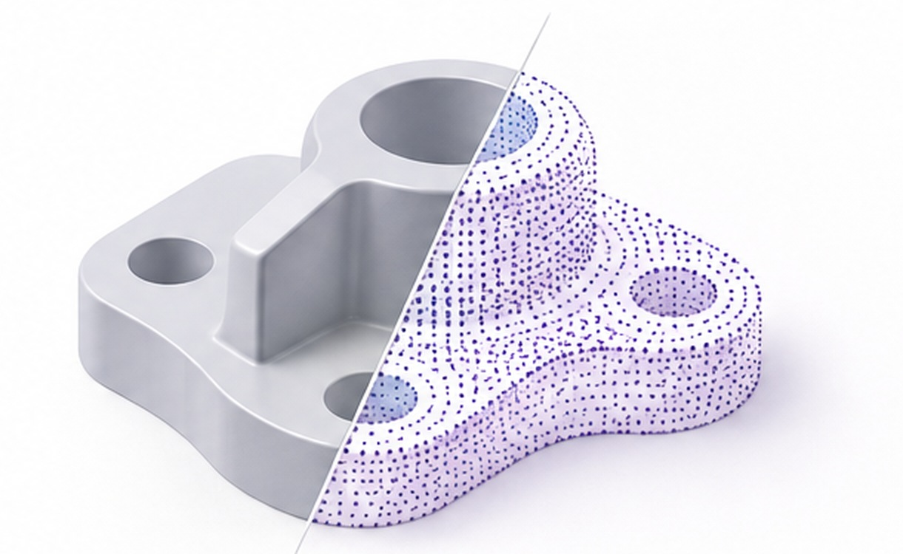

Computer Graphics · CAD · Machine Learning
Nafiseh Izadyar
PhD Candidate
University of Victoria
I work at the intersection of 3D geometry, CAD, and machine learning, building tools and methods for understanding, representing, and reasoning about 3D models.

Geometry / RepresentationFEATURED RESEARCH
More research →TEACHING
Spring 2027CSC 110 — Fundamentals of Programming I
Fall 2026CSC 110 — Fundamentals of Programming I (2 sections)
Summer 2026CSC 115 — Fundamentals of Programming II
SELECTED PUBLICATIONS
Topology-First B-Rep Meshing2026 · arXiv preprintLLM-Guided Material Inference for 3D Point Clouds2025 · arXiv preprint
View all publications A little more about me.
I'm a PhD candidate in Computer Science at UVic, supervised by Dr. Teseo Schneider. I enjoy connecting geometric modeling with practical machine learning research.